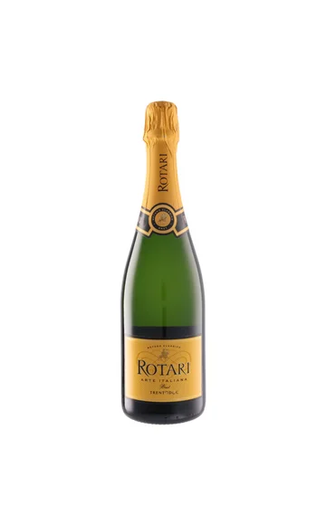
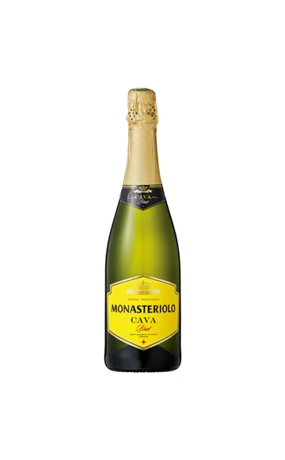
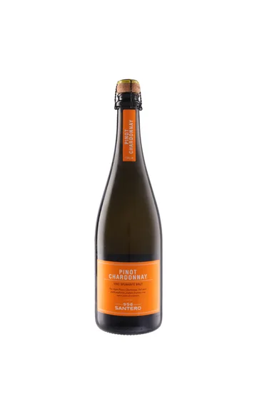
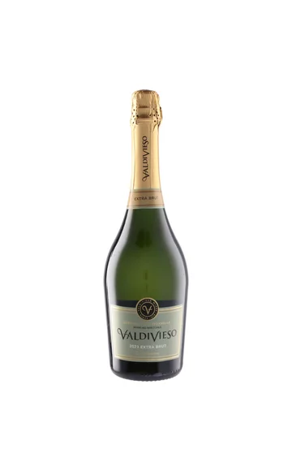
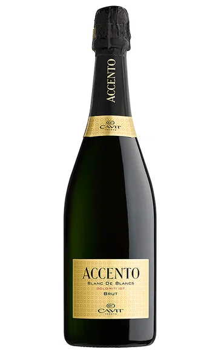
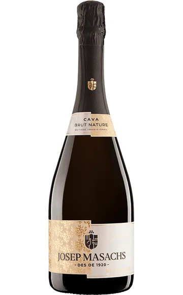
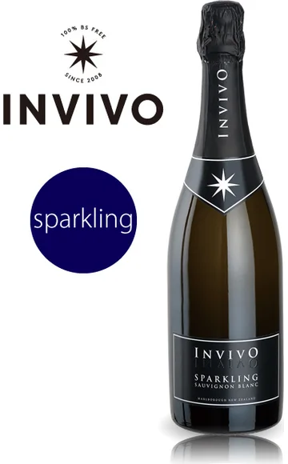
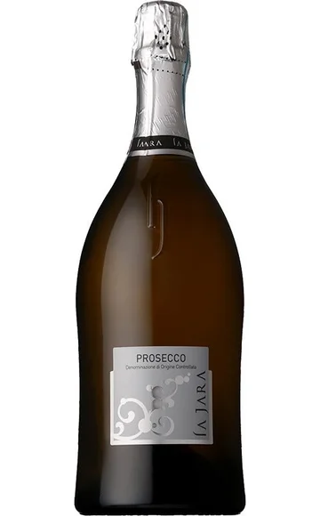
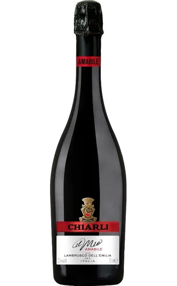
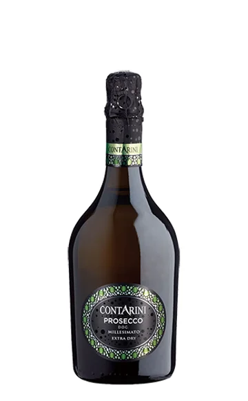

WINE JOURNAL
3,000円以下の
安ウマ泡ワイン10選
乾杯から見つかる、お気に入りの一本。
東京のワイン会や交流会で、おいしい乾杯の一杯に出会ったら。自宅でも予算3,000円以下から、泡の好みを探してみませんか。今回はプロセッコ、カヴァ、瓶内二次発酵の泡、甘口の赤いランブルスコまで、異なるブランドの10本を写真付きで紹介します。華やかな見た目だけでなく、品種・製法・甘辛の違いから選べるリストです。
選定基準・価格について
選定条件：モトックス、日本リカー、サザンクロス、ファインズ、WINE TO STYLEの取り扱いから選んでいます。泡・白・赤の3記事を通じ、同じブランドは重複させていません。
価格確認日：2026年10月21日。参考販売価格は各リンク先で確認した750ml・1本の税込価格です。送料・クール便料金は別途。市場平均・最安値ではなく、割引価格を含む販売例です。価格・在庫・年号は変わるため、購入時にご確認ください。
ワイン会で楽しむ、泡ワインの選び方
食事の始まりに合わせるなら辛口、柔らかな甘さも楽しみたいならプロセッコのエクストラ・ドライ、甘口を選びたいなら赤のランブルスコ。名前だけで辛さを決めず、商品説明も確認しましょう。製法が同じでも、産地や品種が変われば印象は変わります。

01 / SPARKLING
ロータリ ブリュット
¥2,750税込・参考価格
イタリア／トレンティーノ・アルト・アディジェ
輸入元：モトックス750ml
手頃な泡から、少し熟成感のある一本へ進みたいときに。シャルドネ100％を使い、瓶内二次発酵で24カ月以上熟成させるトレントDOCです。リンゴや柑橘の香りを軸に、フレッシュさを楽しめるスタイル。製法にも注目すると、いつもの乾杯が小さな発見につながります。
PAIRING / 料理の提案白身魚のフライ、鶏むね肉のソテー。
TALK / ワイン会での楽しみ方同じシャルドネのアチェントと、泡の口当たりを比べてみましょう。
商品情報を見る ↗
価格・写真の参照元
価格確認先：UNCORK（モトックス直営） ↗
写真参照：モトックス ↗
価格確認：2026年10月21日。送料別。ラベル・年号は販売品と異なる場合があります。

02 / SPARKLING
モナステリオーロ カバ ブルット
¥2,035税込・参考価格
スペイン／カタルーニャ
輸入元：モトックス750ml
カヴァらしい瓶内二次発酵の泡を、2,000円前後から選びたい方へ。マカベオ、シャレロ、パレリャダを使った、果実味と柑橘の爽やかさが持ち味の一本です。重厚さよりもフレッシュな飲み口を求める食卓に。持ち寄りの会で、食事を始める一本として考えやすい候補です。
PAIRING / 料理の提案オリーブ、魚介のマリネ、塩味の唐揚げ。
TALK / ワイン会での楽しみ方ジョセップ・マサックスと比べ、同じカヴァでも辛さの感じ方が違うか話してみてください。
商品情報を見る ↗
価格・写真の参照元
価格確認先：UNCORK（モトックス直営） ↗
写真参照：モトックス ↗
価格確認：2026年10月21日。送料別。ラベル・年号は販売品と異なる場合があります。

03 / SPARKLING
サンテロ ピノ シャルドネ スプマンテ
¥1,980税込・参考価格
イタリア／ピエモンテ
輸入元：モトックス750ml
ピノ・ビアンコとシャルドネを半分ずつ使う、サンテロの辛口スプマンテ。シャルマ方式で造られ、すっきりとした味わいと細やかな泡立ちが特徴です。「ピノ」という名前でも、ここでは白ブドウのピノ・ビアンコ。ラベルから品種を知る入口としても、話題をつくりやすい一本です。
PAIRING / 料理の提案野菜のフリット、モッツァレラのサラダ。
TALK / ワイン会での楽しみ方ブドウの名前を確認しながら、品種と味の印象を結び付けてみましょう。
商品情報を見る ↗
価格・写真の参照元
価格確認先：UNCORK（モトックス直営） ↗
写真参照：モトックス ↗
価格確認：2026年10月21日。送料別。ラベル・年号は販売品と異なる場合があります。

04 / SPARKLING
バルディビエソ エクストラ ブリュット
¥2,530税込・参考価格
チリ
輸入元：モトックス750ml
チリの泡で、瓶内二次発酵の味わいを試してみたいときに。ライムや青リンゴを思わせるフレッシュな香りに、ほのかなトーストのニュアンスを備えます。ピノ・ノワールとシャルドネの組み合わせなので、産地の違う泡と並べる楽しみも。価格だけでなく、香りの方向性で選びたい候補です。
PAIRING / 料理の提案海老のソテー、きのこのキッシュ。
TALK / ワイン会での楽しみ方果実の香りとパンのような香りの、どちらを先に感じるか共有してみましょう。
商品情報を見る ↗
価格・写真の参照元
価格確認先：UNCORK（モトックス直営） ↗
写真参照：モトックス ↗
価格確認：2026年10月21日。送料別。ラベル・年号は販売品と異なる場合があります。

05 / SPARKLING
カヴィット アチェント ブリュット
¥2,310税込・参考価格
イタリア／トレンティーノ・アルト・アディジェ
輸入元：日本リカー750ml
北イタリアの造り手カヴィットが、シャルドネで仕立てるアチェント。加圧タンクで二次発酵させ、フルーツの香りとイーストを思わせる風味、豊かな泡立ちを引き出しています。同じ地域や品種でも、瓶内二次発酵のロータリとは造りが異なります。製法の違いを知るための一本にも。
PAIRING / 料理の提案マッシュルームのオムレツ、フレッシュチーズ。
TALK / ワイン会での楽しみ方ロータリと並べるなら、製法を確認してから香りや泡の感触を比べましょう。
商品情報を見る ↗
価格・写真の参照元
価格確認先：Your Cellar（日本リカー直営） ↗
写真参照：日本リカー ↗
価格確認：2026年10月21日。送料別。ラベル・年号は販売品と異なる場合があります。

06 / SPARKLING
ジョセップ・マサックス ブリュット ナチュレ
¥2,750税込・参考価格
スペイン／カタルーニャ
輸入元：日本リカー750ml
甘さを抑えた泡が好みなら、ブリュット・ナチュレを候補に。公式情報では残糖1g/L、14カ月以上の瓶内熟成とされています。シャープな酸だけでなく、熟した果実や花を思わせる香りも持つカヴァです。「超辛口なら酸っぱいだけ？」という疑問を、食事とともに確かめる楽しみがあります。
PAIRING / 料理の提案イワシのマリネ、魚介のグリル。
TALK / ワイン会での楽しみ方甘さと果実の香りを分けて考えると、辛口の好みが伝えやすくなります。
商品情報を見る ↗
価格・写真の参照元
価格確認先：Your Cellar（日本リカー直営） ↗
写真参照：日本リカー ↗
価格確認：2026年10月21日。送料別。ラベル・年号は販売品と異なる場合があります。

07 / SPARKLING
インヴィーヴォ スパークリング ソーヴィニヨンブラン
¥2,574税込・参考価格
ニュージーランド
輸入元：サザンクロス750ml
泡でもソーヴィニヨン・ブランの爽やかさを楽しみたい方へ。ライムやシトラス、草原を思わせる香りが広がるスタイルで、定番のシャルドネ主体の泡とは違う入口になります。輸入元は、スパークリング用に栽培されたブドウを使用すると紹介。品種の個性を話題にしたい会にも向く候補です。
PAIRING / 料理の提案海老のオイル焼き、白身魚の香草焼き。
TALK / ワイン会での楽しみ方白ワインの記事のソーヴィニヨン・ブランと、香りに共通点があるか探してみてください。

08 / SPARKLING
ラ・ジャラ プロセッコ スプマンテ・ブリュット オーガニック
¥2,662税込・参考価格
イタリア／ヴェネト
輸入元：ファインズ750ml
有機栽培のブドウで造る、ラ・ジャラのプロセッコ。グレーラ由来の青リンゴを思わせる香りと、ほどよい酸を備えた辛口です。シャルマ方式で仕立てられるので、まずは果実の香りに注目してみたい一本。オーガニックという言葉に加え、品種や製法も選ぶ軸にすると好みに近づきます。
PAIRING / 料理の提案カプレーゼ、海老と野菜のサラダ。
TALK / ワイン会での楽しみ方コンタリーニと比べて、同じプロセッコの甘さや酸の印象を言葉にしてみましょう。
商品情報を見る ↗
価格・写真の参照元
価格確認先：THE CELLAR ↗
写真参照：THE CELLAR ↗
価格確認：2026年10月21日。送料別。ラベル・年号は販売品と異なる場合があります。

09 / SPARKLING
キアーリ イル・ミオ ランブルスコ ロッソ アマービレ
¥1,617税込・参考価格
イタリア／エミリア・ロマーニャ
輸入元：ファインズ750ml
泡は白くて辛いもの、というイメージを広げてくれる赤のランブルスコ。こちらはアマービレと呼ばれる甘口で、果実の香りと爽やかな酸、なめらかな味わいを楽しむタイプです。辛口の泡とは好みも役割も異なります。甘さのあるワインを選びたい人のために、会の中で選択肢を用意する一本です。
PAIRING / 料理の提案生ハム、サラミ、ベリーを使ったデザート。
TALK / ワイン会での楽しみ方辛口の泡と混同せず、甘口を楽しみたい方に案内しましょう。
商品情報を見る ↗
価格・写真の参照元
価格確認先：カーヴ・ド・ヴァン ↗
写真参照：カーヴ・ド・ヴァン ↗
価格確認：2026年10月21日。送料別。ラベル・年号は販売品と異なる場合があります。

10 / SPARKLING
コンタリーニ プロセッコ ミレジマート エクストラ・ドライ
¥2,200税込・参考価格
イタリア／ヴェネト
輸入元：WINE TO STYLE750ml
コンタリーニのプロセッコは、藤やアカシアを思わせる繊細な香りと、わずかに甘みを感じる果実の表情が持ち味。名前のエクストラ・ドライだけで「最も辛い」と判断せず、公式に示された残糖12〜14g/Lも参考にしてみてください。酸とのバランスを楽しむ、食前の一杯に選びたい泡です。
PAIRING / 料理の提案生ハムと洋梨、冷たい前菜。
TALK / ワイン会での楽しみ方名前だけで辛さを予想せず、ブリュットとの感じ方の違いを楽しみましょう。
商品情報を見る ↗
価格・写真の参照元
価格確認先：WINE TO STYLE公式 ↗
写真参照：WINE TO STYLE ↗
価格確認：2026年10月21日。送料別。ラベル・年号は販売品と異なる場合があります。
まずは3本で、小さな飲み比べを
ロータリ ブリュット、コンタリーニ プロセッコ ミレジマート エクストラ・ドライ、キアーリ イル・ミオ ランブルスコ ロッソ アマービレ。掲載した参考販売価格の合計は6,567円です。瓶内二次発酵の白、果実の香りを楽しむプロセッコ、甘口の赤い泡という、役割の異なる組み合わせです。甘口は辛口と分けて案内すると、それぞれの好みを大切にできます。すべて飲み切ることを目標にせず、人数や飲める量に合わせて本数を調整してください。
カヴァもシャンパーニュと同じワインですか？
同じワインではありません。瓶内二次発酵という共通点があっても、産地・品種・規定が異なります。名前や価格の上下だけで判断せず、泡の口当たり、香り、食事との相性を楽しんでみてください。
味わいの紹介は輸入元・販売元の商品情報を参考に編集したもので、全商品の実飲レビューではありません。料理と飲み比べの組み合わせは編集上の提案です。商品写真の参照先は各カードの「価格・写真の参照元」に記載しています。
東京で、ワインと会話を楽しみたい方へ
GLASS VIBEは、東京・湯島を拠点に準備しているワイン交流会です。一人でも、ワインに詳しくなくても、自分のペースで。記事で紹介した銘柄がイベントで提供されるとは限りません。